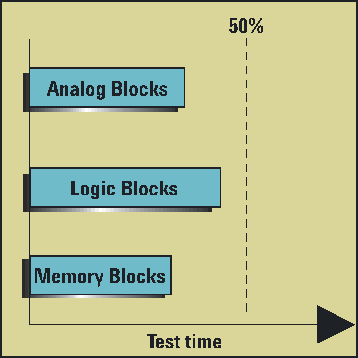

Test time benefit analysis
The length of all test times of a device must be known in order to determine if concurrent testing will significantly reduce test time. In general, the test time of the slowest IP core should be less than 50% of the overall test time as shown below.

Functional changes
- Introduced before SmarTest 6.3.2